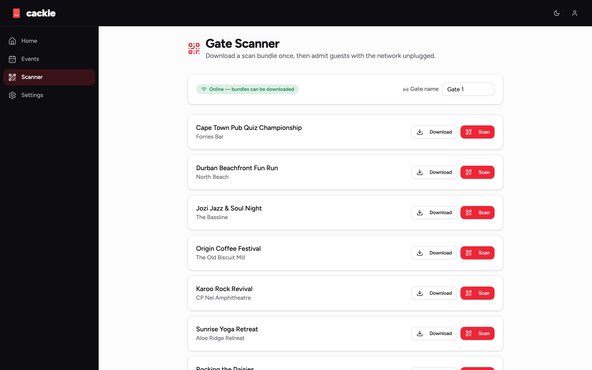

Cackle
Your gate works with no internet.
Cackle is events and ticketing in a single Go binary. Organisers create events and ticket types, attendees buy and get a signed QR, staff scan at the gate — and every ticket is an Ed25519-signed capability a scanner verifies entirely offline against a pinned event key. The server issues tickets and reports sales, but it is never in the critical path of admission. If the venue's network dies mid-event, the gates keep working.

Built for the gate that can't fail
Self-hostable, open source, and honest about the market it's for: festivals in a field, remote venues, and anywhere the network isn't guaranteed.
Offline-verifiable tickets
Every ticket is cackle.<payload>.<sig> — an Ed25519-signed capability verified by a pure function: no database, no network, no clock but the one you hand it.
The server isn't the gate
A scanner pulls one scan-bundle while online — event details, issuer keys, a ticket index — and can then run the whole event unplugged.
Per-event signing keys
Every event signs with its own Ed25519 key. There is no global signing key, ever — a compromised key compromises one event, not the platform.
Local, append-only dedupe
Admission dedupe happens on the device: first scan wins, duplicates are recorded as their own row — never overwritten, always auditable.
Pluggable payments
A small Provider seam behind every charge — ships with Paystack and an auto-settling stub for demos and tests. Cackle never holds funds.
Single binary
Go embeds SQLite (pure Go, no cgo) and the built React frontend into one file. docker run -p 8080:8080 vulos/cackle is the whole install.
Quick start
Zero setup, fully seeded, buy a ticket and scan it end to end.
git clone https://github.com/vul-os/cackle.git cd cackle docker build -t vulos/cackle . docker run -d --name cackle -p 8080:8080 \ -v cackle-data:/srv/data vulos/cackle # or from source, fully seeded with demo data: make build ./cackle --demo # open http://localhost:8080
- 1Run itDocker one-liner, or build the Go binary yourself — no external database, no Node process in production.
- 2Try the demo
--demoseeds an org, an event, ticket types, and an auto-settling payment provider — buy a ticket with zero setup. - 3Scan it, offlineOpen the scanner view, turn off your Wi-Fi, and admit the ticket anyway — that's the whole point.
Part of Vulos
Vulos is an open, self-hostable web OS and its owned apps. Cackle runs perfectly standalone — and embeds as a first-class app in the Vulos OS shell, alongside Office, Files, Relay, and llmux.
Explore Vulos →